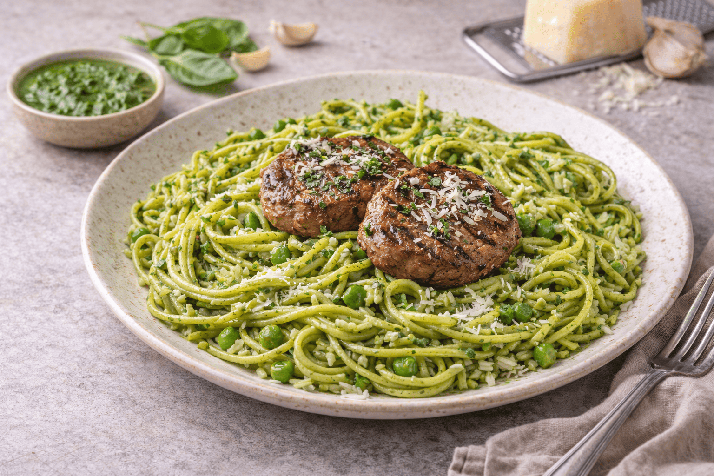

Tallarines Verdes

Descripción
Los tallarines verdes son un clásico de la cocina criolla peruana, de origen italiano adaptado al gusto local.
Llevan una salsa cremosa de albahaca y espinaca, y suelen servirse con bistec o pollo y papa amarilla sancochada.
Ingredientes
- 400 g de tallarines
- 1 atado de albahaca
- 1 atado de espinaca
- 150 g de queso fresco
- 1/2 taza de leche evaporada
- 2 dientes de ajo
- 1/4 taza de aceite
- Sal y pimienta al gusto
- Bistec o pollo y papas amarillas para acompañar
Instrucciones
- Hervir agua con sal y cocinar los tallarines hasta que estén al dente. Reservar un poco del agua de cocción.
- Blanquear la espinaca y la albahaca en agua hirviendo por un minuto y luego enfriarlas.
- Licuar la albahaca, la espinaca, el ajo, el queso fresco, la leche evaporada, el aceite, sal y pimienta hasta obtener una salsa homogénea.
- Si la salsa queda muy espesa, agregar un poco del agua de cocción de la pasta.
- Mezclar los tallarines calientes con la salsa hasta cubrirlos por completo.
- Sancochar las papas amarillas y dorar el bistec o el pollo.
- Servir los tallarines con la carne y la papa amarilla.